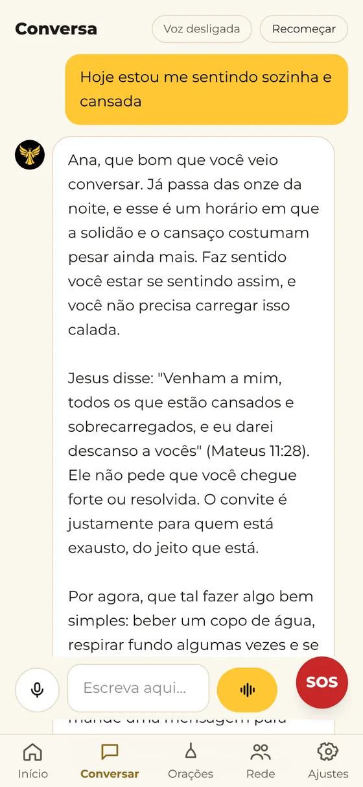
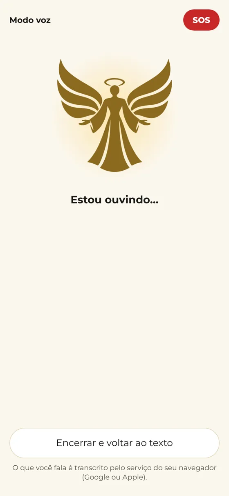
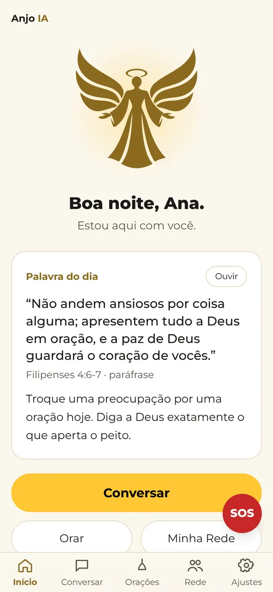
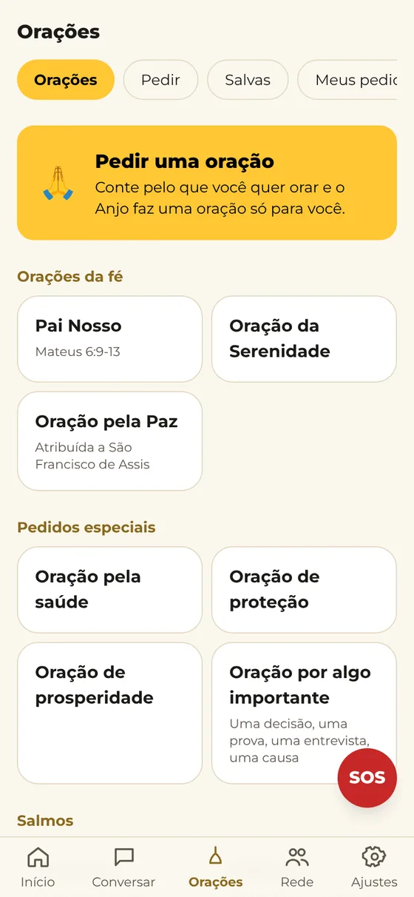
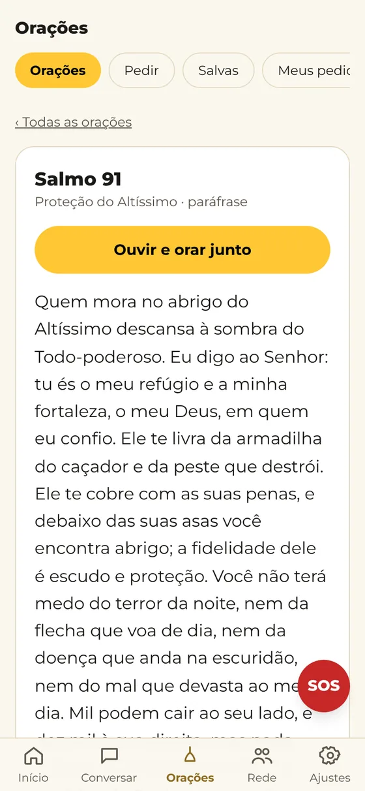
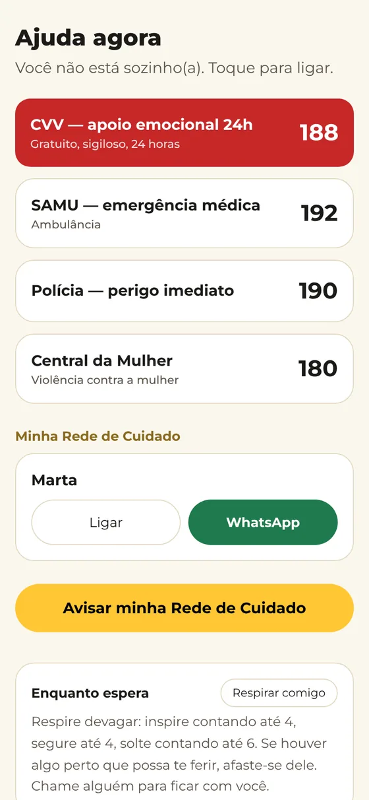

Acolher
Você conta o que está no coração, por texto ou por voz. O Anjo escuta com calma e responde com carinho.
Asas de luz para o seu dia a dia
O Anjo IA nasceu para que ninguém precise atravessar a noite sozinho. Um amigo que escuta, ora com você, traz uma palavra de esperança e lembra que existe saída.
Gratuito · Para maiores de 18 anos · Cristão ou não, você é bem-vindo
O que nós somos
Não somos médicos, terapeutas nem psicólogos. Somos uma presença de paz no bolso: alguém que escuta sem julgar, fala a verdade com amor e lembra que Deus está perto, a qualquer hora.
Você conta o que está no coração, por texto ou por voz. O Anjo escuta com calma e responde com carinho.
Uma palavra da Bíblia para o momento que você vive, explicada de um jeito simples, sem sermão.
Um passo pequeno para hoje, uma oração com o seu nome e o incentivo para estar perto de quem te ama.
Como funciona

Escreva ou fale. O Anjo responde com calma, lembra da sua caminhada e retoma os assuntos com naturalidade, como um amigo que se importa.

Toque no anjo e converse como numa ligação. Ele escuta, responde com uma voz serena e volta a ouvir sozinho. Ótimo para os dias em que escrever pesa.

Toda manhã, uma palavra de esperança com uma reflexão curta. Para ler ou ouvir antes de sair de casa.
Orações
Orações da fé, Salmos e pedidos especiais, cada uma com áudio para ouvir e orar junto. E quando precisar, peça uma oração feita só para você, com o seu nome e a sua história.
Para católicos, também Ave Maria, Santo Anjo do Senhor e Glória ao Pai.



Seu Anjo da Guarda
No cadastro, você escolhe o seu Anjo da Guarda: alguém em quem você confia muito. Se você pedir ajuda, ou se o momento estiver pesado demais, essa pessoa é avisada para estar perto de você. Ela nunca vê as suas conversas.
As suas conversas são só suas. Quem acompanha você nunca vê o que você conta ao Anjo.
Os dados ficam em São Paulo, seguindo a LGPD, com acesso protegido e registrado.
Você entra com o seu CPF e um PIN de 4 números. Se esquecer, recupera na hora.
Funciona como aplicativo direto do navegador. As versões das lojas chegam em breve.
Não. É uma inteligência artificial criada para ser um amigo: escutar, aconselhar com base na Bíblia e orar com você. Ele sempre diz que é uma IA.
Não. Não somos médicos, terapeutas nem psicólogos. O Anjo incentiva você a buscar quem cuida de você: a sua igreja, a sua família e os profissionais de saúde.
Não. Qualquer pessoa maior de 18 anos que busca apoio, conselho e oração é bem-vinda. O Anjo respeita a sua tradição: evangélica, católica ou geral.
Há um plano gratuito. O botão SOS, o Anjo da Guarda e o cuidado nos momentos de risco são sempre gratuitos e nunca têm limite.
Uma pessoa em quem você confia muito, que você escolhe no cadastro. Ela só é avisada se você pedir ajuda ou se o momento estiver muito difícil, e nunca vê as suas conversas.
Com o seu CPF e o PIN de 4 números que você cria no cadastro. Esqueceu o PIN? Coloque o CPF e o telefone cadastrado e um PIN novo aparece na hora.